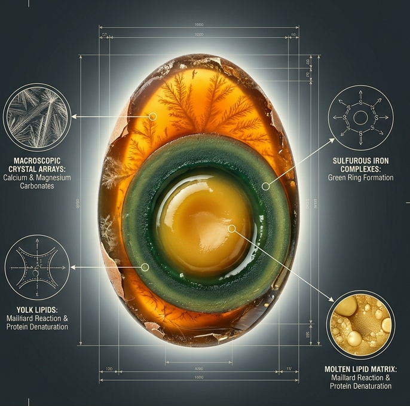
Introduction
A 45-Day Chemical
Metamorphosis
皮蛋的炼金术 — A masterpiece where culinary art meets chemical precision. Through 45 days of controlled transformation, simple eggs become a textural and aromatic marvel.
The Process
The Four Stages of Transformation
Each stage paired with its underlying chemistry — from raw egg to culinary masterpiece.
Liquefaction & Penetration
Days 1–7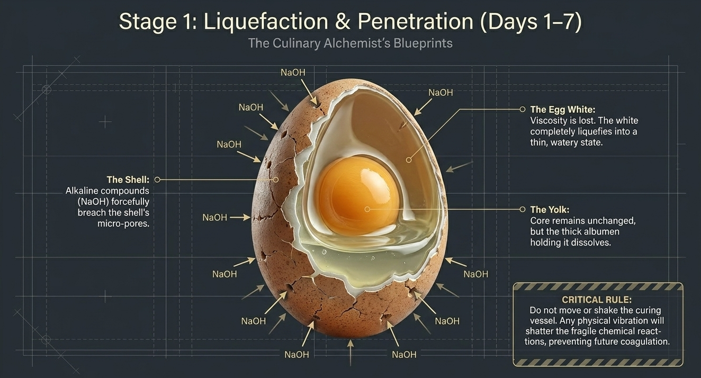
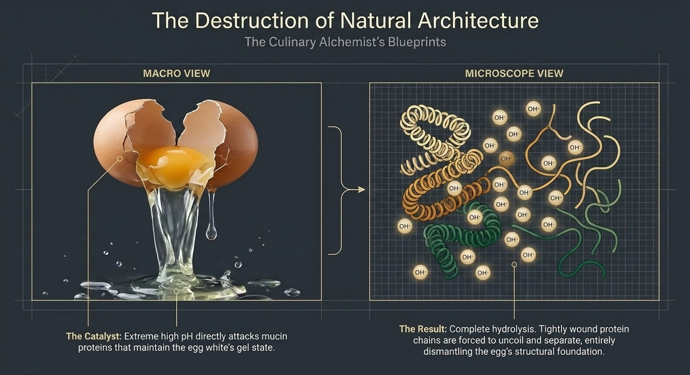
Alkaline compounds (NaOH) breach the shell\'s micro-pores. The egg white completely liquefies. Extreme high pH attacks mucin proteins, causing complete hydrolysis — tightly wound protein chains uncoil and separate, dismantling the egg\'s structural foundation. Critical: Do not move or shake the curing vessel.
Coagulation & Gelation
Days 7–15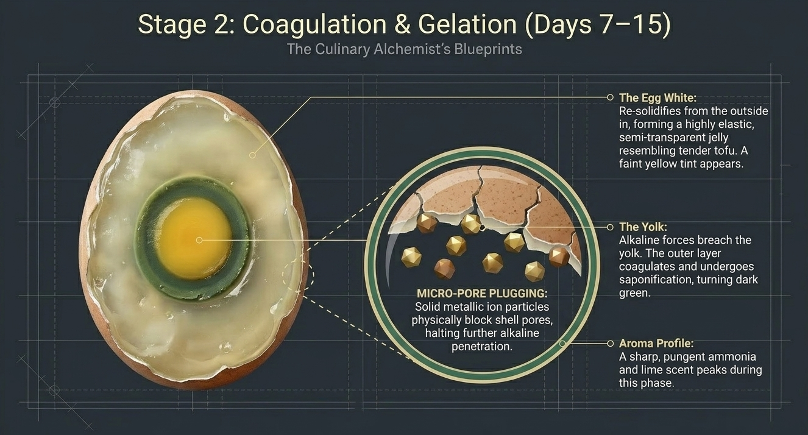
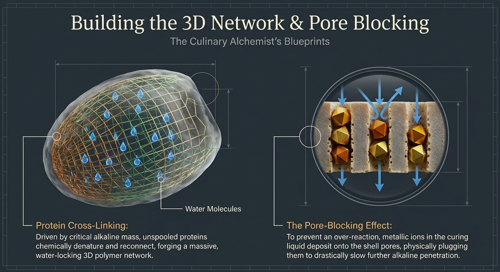
The egg white re-solidifies into a highly elastic, semi-transparent jelly. The yolk\'s outer layer coagulates and turns dark green through saponification. Unspooled proteins chemically denature and reconnect, forging a massive water-locking 3D polymer network. Metallic ions plug shell pores to slow further alkaline penetration. A pungent ammonia scent peaks.
Coloration & The Maillard Magic
Days 16–30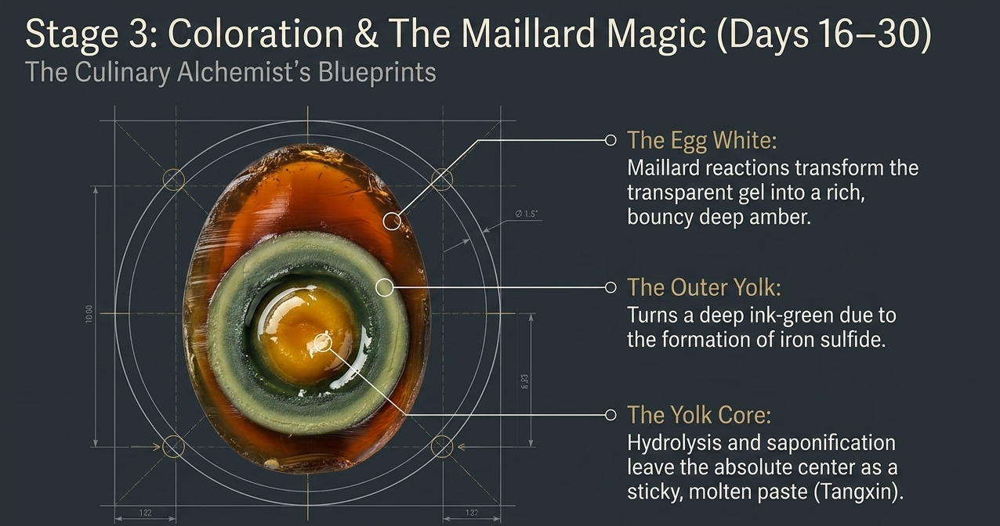
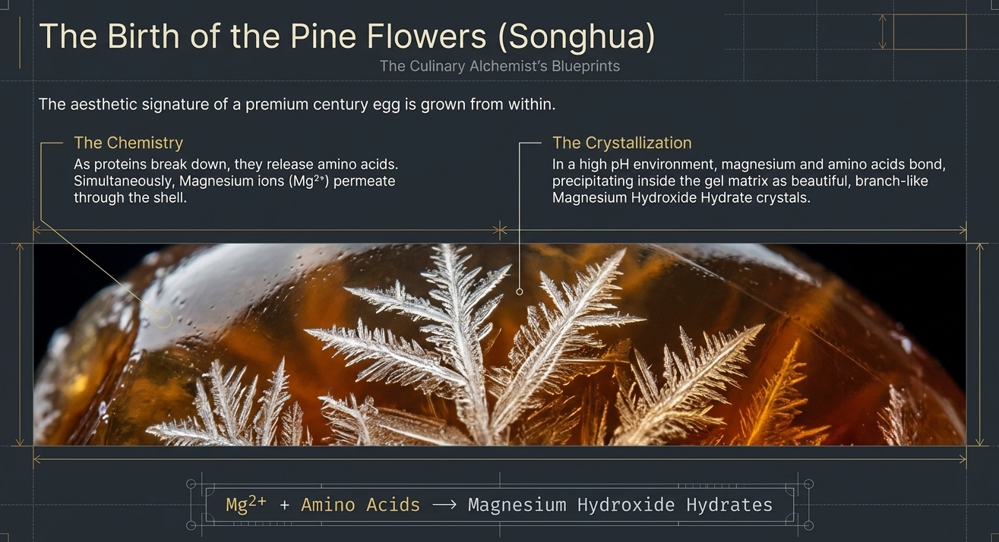
Maillard reactions transform the gel into rich deep amber. The yolk\'s outer layer turns ink-green from iron sulfide. The center remains a sticky, molten paste — the coveted Tangxin (溏心).
Mg²⁺ + Amino Acids → Magnesium Hydroxide Hydrates — the signature pine-flower crystals (松花) precipitate within the gel matrix.
Maturation & Flavor Fixing
Days 31–45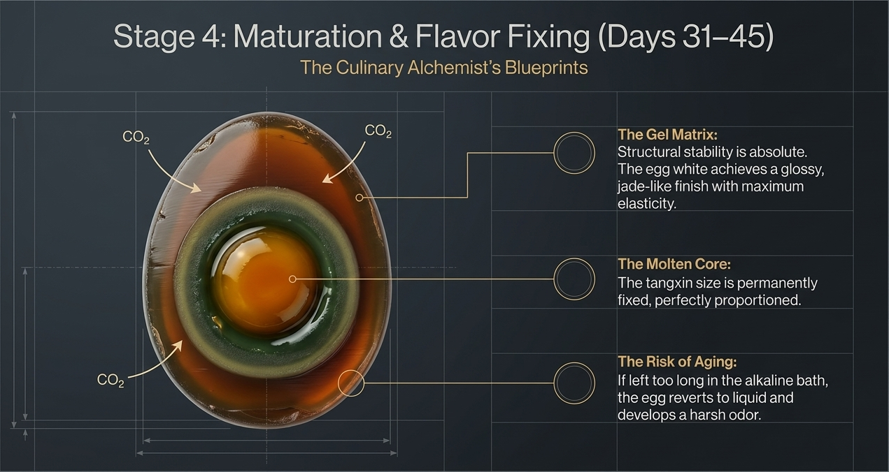
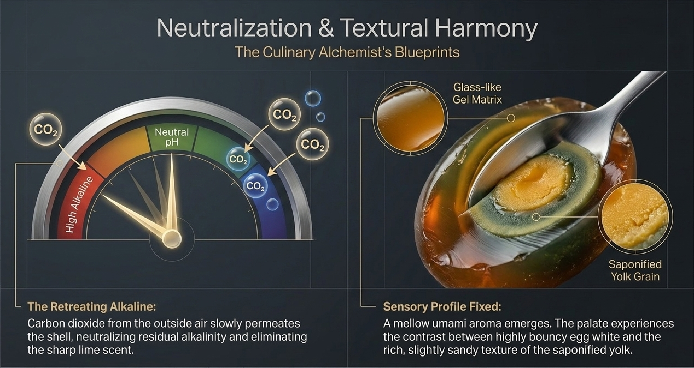
Structural stability peaks — the egg white achieves a jade-like finish. The Tangxin size is permanently fixed. CO₂ from the air slowly permeates the shell, neutralizing residual alkalinity and eliminating the sharp lime scent. A mellow umami aroma emerges. Risk: if left too long, the egg reverts to liquid with a harsh odor.
The Structure
The Architecture of a Masterpiece
A cross-section reveals four distinct layers, each born from a different chemical process.
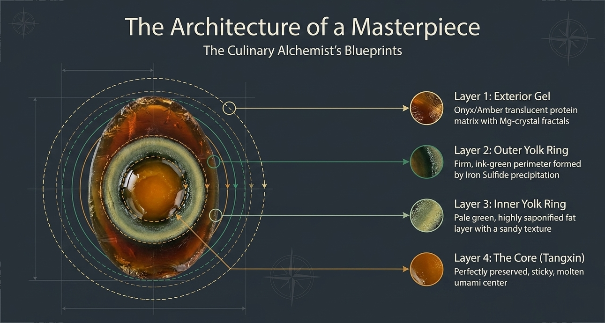
Epilogue
The Triumph of Culinary Chemistry
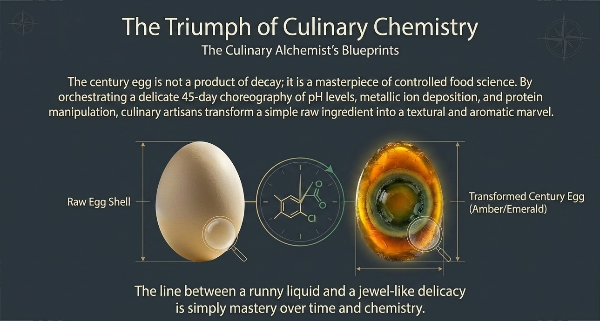
"The century egg is not a product of decay; it is a masterpiece of controlled food science. By orchestrating a delicate 45-day choreography of pH levels, metallic ion deposition, and protein manipulation, culinary artisans transform a simple raw ingredient into a textural and aromatic marvel."
The line between a runny liquid and a jewel-like delicacy is simply mastery over time and chemistry.